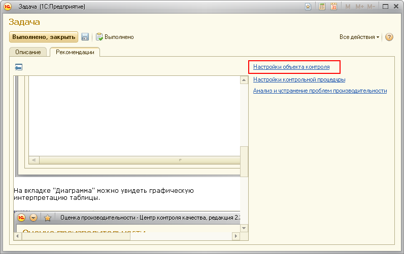

В объекте контроля не заполнены настройки, необходимые для работы контрольной процедуры.
Нужно открыть форму объекта контроля и заполнить поля необходимых настроек.

После этого нужно в форме задачи нажать кнопку "Выполнено" или "Выполнено, закрыть".